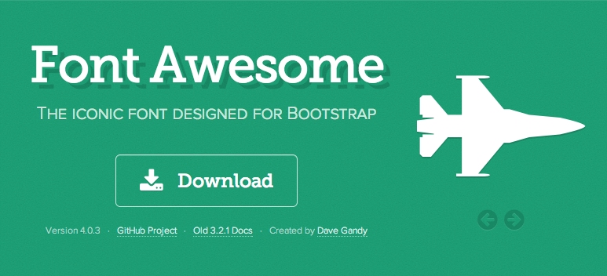

<!DOCTYPE html><html lang="ja"><head><meta charset="utf-8" /></head><meta content="IE=edge,chrome=1" http-equiv="X-UA-Compatible" /><title>テストすらいど</title><link href="../stylesheets/all.css" media="screen" rel="stylesheet" type="text/css" /><body><div class="reveal"><div class="slides"><section data-markdown="" data-separator="\n\*\*\*\*\*\*\*\*\*\*\*\*\*\*\*\*\*\*\*\*\n$" data-vertical="\n---\n$"><script type="text/template">## test slide
created by [Leko](https://github.com/Leko)

********************

## structure
```
source/
├── bower_components
│   ├── highlightjs
│   └── reveal.js
├── images
│   └── presen
├── layouts
│   ├── layout.slim
│   └── presen.slim
├── presen
│   └── test.html.erb <= slide file here
└── stylesheets
    └── presen.scss
```

********************

## dependencies

---

### reveal.js
http://lab.hakim.se/reveal-js/#/


---

### Markdown
https://daringfireball.net/projects/markdown/


---

### Bower
https://github.com/bower/bower


---

### middleman
http://middlemanapp.com/


---

### font awesome
http://fortawesome.github.io/Font-Awesome/


********************


## Theme

---

### slide
**soralized**

[reveal.js - The HTML Presentation Framework](http://lab.hakim.se/reveal-js/#/themes)

---


### syntax highlight
**solarized_dark**

[highlight.js test](http://highlightjs.org/static/test.html)

---

### layout(slim)
```slim
body
  .reveal
    .slides
      section[data-markdown data-separator="\n\*\*\*\n$" data-vertical="\n---\n$"]
        script[type="text/template"]
          == yield

```

---

### horizontal,vertical slide

```markdown
\## slide1

\********************

\## slide2

\---

\### slide2-2
```

********************

## Font Awesome

---

## <i class='fa fa-question-circle'></i> middleman helper

```ruby
<%= fa('question-circle') %> #=> <i class='fa fa-question-circle'></i>
```

********************

## TODO
- Deploy `gh-pages` branch
- Move to config.rb reveal.js config 

********************

## fin.
<a href="https://github.com/Leko/leko.github.com"><i class='fa fa-github'></i> repository</a></script></section></div></div><script src="../bower_components/reveal.js/lib/js/head.min.js"></script><script src="../bower_components/reveal.js/js/reveal.min.js"></script><script type="text/javascript">Reveal.initialize({
    controls: true,
    progress: true,
    history: true,
    center: true,

    theme: Reveal.getQueryHash().theme, // available themes are in /css/theme
    transition: 'default', // default/cube/page/concave/zoom/linear/fade/none

    dependencies: [
        { src: '../bower_components/reveal.js/lib/js/classList.js', condition: function() { return !document.body.classList; } },
        { src: '../bower_components/reveal.js/plugin/markdown/marked.js', condition: function() { return !!document.querySelector( '[data-markdown]' ); } },
        { src: '../bower_components/reveal.js/plugin/markdown/markdown.js', condition: function() { return !!document.querySelector( '[data-markdown]' ); } },
        { src: '../bower_components/highlightjs/highlight.pack.js', async: true, callback: function() { hljs.configure({classPrefix: 'hljs-'}); hljs.initHighlightingOnLoad(); } },
        { src: '../bower_components/reveal.js/plugin/zoom-js/zoom.js', async: true, condition: function() { return !!document.body.classList; } },
        { src: '../bower_components/reveal.js/plugin/notes/notes.js', async: true, condition: function() { return !!document.body.classList; } }
    ]
});</script></body></html>